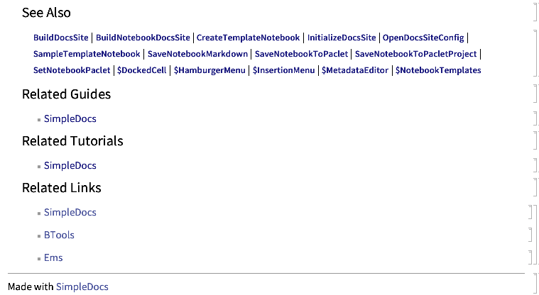

Making Batch Documentation
One of the big benefits of having code to generate documentation like this (and having simple documentation to work with) is that we can deal with it programatically. That's not to say that we can do everything perfectly, but we can get the basic superstructure up and working and handle most of the boiler plate.
For this demo, we'll first figure out what functions still need to be documented:
<< SimpleDocs`Package`
fns = Names["SimpleDocs`Package`*"]
{"BuildDocsSite","BuildNotebookDocsSite","CreateTemplateNotebook","InitializeDocsSite","OpenDocsSiteConfig","SampleTemplateNotebook","SaveNotebookMarkdown","SaveNotebookToPaclet","SaveNotebookToPacletProject","SetNotebookPaclet","SetPacletInfo","$DockedCell","$HamburgerMenu","$InsertionMenu","$MetadataEditor","$NotebookTemplates"}
needDocs=
Select[fns,
!FileExistsQ@
FileNameJoin@{ParentDirectory@NotebookDirectory[], "ref", StringSplit[#, "`"]<>".nb"}&
]
{"BuildNotebookDocsSite","InitializeDocsSite","OpenDocsSiteConfig","SampleTemplateNotebook","SaveNotebookMarkdown","SaveNotebookToPaclet","SaveNotebookToPacletProject","SetNotebookPaclet","SetPacletInfo","$DockedCell","$HamburgerMenu","$InsertionMenu","$MetadataEditor","$NotebookTemplates"}
At this point we'll think about what we did in the basic SimpleDocs Usage tutorial and just write code to do most of it:
- Generate function template with
CreateTemplateNotebook - Save notebook to paclet
- Edit metadata to get the context and URI parts correct
- Change the little label bar to be correct
- Save the documentation notebook
- Save the Markdown
As an additional step, we'll add the related links I've been adding to all of the pages, which look like this:
And then we'll just loop over the functions and do that at each step. So let's start. First, the function to make a template and get the NotebookObject reference. Well that's already basically there, so let's move to the next part, which is correcting the metadata:
correctMetadata[nb_]:=
(
CurrentValue[nb, {TaggingRules, "Metadata", "context"}]=
"SimpleDocs`";
CurrentValue[nb, {TaggingRules, "Metadata", "uri"}]=
StringReplace[
CurrentValue[nb, {TaggingRules, "Metadata", "uri"}],
"SimpleDocsPackage"->"SimpleDocs"
];
)
That was easy. Okay. Next step is correcting the label cell. I called the cell style "TitleBar" so we'll just find the first of that type of cell and change the body:
correctTitleBar[nb_]:=
With[{c=Cells[nb, CellStyle->"TitleBar"][[1]]},
NotebookWrite[c, Cell["SimpleDocs Symbol", "TitleBar"]];
]
Then we'll replace the related bits. Let's just say I saved the collection of cells to a variable called $relatedCells :
correctRelatedStuff[nb_]:=
Module[{cells, firstCell},
firstCell=Cells[nb, CellStyle->"SeeAlso"][[1]];
cells=
Cells[nb,
CellStyle->"SeeAlso"|"Related"|"RelatedLinks"|"Footer"|"Text"|"Item"
];
cells=Join@@SplitBy[cells, #=!=firstCell&][[2;;]];
SelectionMove[cells[[-1]], After, Cell];
NotebookDelete@cells;
NotebookWrite[nb, $relatedCells]
];
Also easy. Finally, the saving steps are basically just functions in the package so we'll just chain this all together as:
doTemplateDocs[fn_]:=
Module[{nb, file, docs, md},
nb=CreateTemplateNotebook@fn;
CurrentValue[nb, {TaggingRules, "Paclet"}]="SimpleDocs";
SaveNotebookToPacletProject[nb];
file = NotebookFileName@nb;
correctMetadata[nb];
correctTitleBar[nb];
correctRelatedStuff[nb];
NotebookSave@nb;
docs = SaveNotebookToPaclet[nb];
md = SaveNotebookMarkdown[nb];
NotebookClose@nb;
<|
"Notebook"->file,
"Documentation"->docs,
"Markdown"->md
|>
]
Let's just check that this works cleanly on the first of our undocumented functions:
doTemplateDocs@needDocs[[1]]
<|"Notebook"->"~/Documents/Wolfram Mathematica/Applications/SimpleDocs/project/docs/content/ref/BuildNotebookDocsSite.nb","Documentation"->"~/Documents/Wolfram Mathematica/Applications/SimpleDocs/Documentation/English/ReferencePages/Symbols/BuildNotebookDocsSite.nb","Markdown"->"~/Documents/Wolfram Mathematica/Applications/SimpleDocs/project/docs/content/ref/BuildNotebookDocsSite.md"|>
Seems clean. Now let's do this for all of the rest of them (where they aren't just objects, which a) don't work well with the templates and b) aren't going to be worth documenting really):
doTemplateDocs/@
Select[Rest@needDocs, Length@ToExpression[#, StandardForm, OwnValues]==0&];
Related Guides
Related Tutorials
Related Links
Made with SimpleDocs